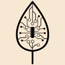
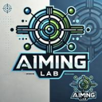
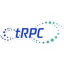

Memory tools for building AI agents
Memory layers that let agents remember users, past sessions and facts over time. Of the 254 tools on our building AI agents page, 19 fit this narrower job. By pricing: 16 open source, 3 pricing on the maker's site. The most-starred open repos here are Deer Flow (83,959 stars), Oh My OpenAgent (OmO) (70,183 stars), Mem0 (67,147 stars). Most come from the frameworks (8), memory & RAG (5), personal agents (3) categories.
Updated
Deer Flow
ByteDance's open-source long-horizon agent harness that researches, codes and creates using sandboxes, memory and sub-agents.
Added
Oh My OpenAgent (OmO)
Agent harness add-on (OmO) for OpenCode and Pi that runs multi-model coding agent teams with memory, planning and parallel workflows.
Added
Mem0
Mem0 is an open-source memory layer for AI agents that extracts facts from conversations in a single add-only pass, links entities across memories and retrieves them in later sessions, with an Apache-2.0 SDK and a managed platform.
Added
Nanobot
Ultra-lightweight, self-hosted personal agent framework in Python with a web UI, tools, memory and MCP support.
Added
Agno
Python framework and runtime for building, running and managing multi-agent systems with memory, knowledge and tools.
Added
Letta
Framework for stateful agents with long-term memory (formerly MemGPT).
Added
Memori
An LLM-, database- and framework-agnostic memory layer that turns what agents do and say into structured, persistent state they can recall in later runs. Open source to self-host, or use Memori Cloud with an API key.
Added
Osaurus
Native macOS harness for AI agents with any model, memory and autonomous execution.
Added
Honcho
Memory library and service for building stateful agents that remember users.
Added

AIOS
Research AI agent operating system that handles scheduling, context switching, memory, storage and tool management for LLM-based agents.
Added

SimpleMem
Research-backed lifelong memory library for LLM agents that stores, compresses and retrieves text and multimodal memories, usable over MCP.
Added
LazyCodex
Agent harness for Codex that adds project memory, planning, execution and verified completion for complex codebases.
Added
Cheshire Cat
Open-source AI agent microservice designed to be easy to understand and extend, with plugins and memory.
Added
Neuron AI
PHP framework for creating and orchestrating AI agents with LLMs, tools, vector stores and memory.
Added
Beacon
An open-source memory layer that captures traces from coding agents across harnesses and turns them into self-improving memory and visibility into what your agents did.
Added

tRPC-Agent-Go
Go framework for production agent systems with graph workflows, tools, memory, A2A, AG-UI, MCP, evaluation and OpenTelemetry.
Added
BaseAI
Web AI framework from Langbase for building AI agents with memory (RAG) and deploying them serverless.
Added
AWorld
Agent harness from inclusionAI for building expert agents that search, reproduce and improve on ideas with their own tools and memory.
Added
TecAdRise Bot
TecAdRise Bot is a free, MIT-licensed Windows desktop app (Electron and Cursor SDK) for running a local team of AI agents, each with its own model, memory, skills, MCP servers, workspace and schedule.
Added
GitHub repos (19)
| Repo | GitHub stars | Licence | Last push |
|---|---|---|---|
| Deer Flow ↗ | 83,959 | MIT | 2026-10-24 |
| Oh My OpenAgent (OmO) ↗ | 70,183 | — | 2026-10-24 |
| Mem0 ↗ | 67,147 | Apache License 2.0 | 2026-10-21 |
| Nanobot ↗ | 49,096 | MIT | 2026-10-24 |
| Agno ↗ | 42,769 | Apache License 2.0 | 2026-10-23 |
| Letta ↗ | 25,125 | Apache License 2.0 | 2026-10-18 |
| Memori ↗ | 17,149 | — | 2026-09-18 |
| Osaurus ↗ | 8,052 | MIT | 2026-10-24 |
| Honcho ↗ | 7,648 | GNU AGPL v3.0 | 2026-10-23 |
| AIOS ↗ | 6,492 | no licence (the LICENSE file is empty) | 2026-07-20 |
| SimpleMem ↗ | 3,836 | — | 2026-07-24 |
| LazyCodex ↗ | 3,792 | — | 2026-10-24 |
| Cheshire Cat ↗ | 3,095 | — | 2026-07-29 |
| Neuron AI ↗ | 2,146 | — | 2026-10-20 |
| Beacon ↗ | 2,009 | — | 2026-10-24 |
Top 15 of 19 by stars. Stars and licence come from each repo, checked when the listing was last verified.
FAQ
What are the best AI tools for building AI agents focused on memory?
We list 19. The first three by GitHub stars and featured status are Deer Flow: ByteDance's open-source long-horizon agent harness that researches, codes and creates using sandboxes, memory and sub-agents.; Oh My OpenAgent (OmO): Agent harness add-on (OmO) for OpenCode and Pi that runs multi-model coding agent teams with memory, planning and parallel workflows.; Mem0: Mem0 is an open-source memory layer for AI agents that extracts facts from conversations in a single add-only pass, links entities across memories and retrieves them in later sessions, with an Apache-2.0 SDK and a managed platform.
Are there free or open-source options?
Yes: 16 open source, 3 pricing on the maker's site. Pricing is as each maker states it.
More from building AI agents
Tools are grouped by what each says it does. Missing one? Submit it free.